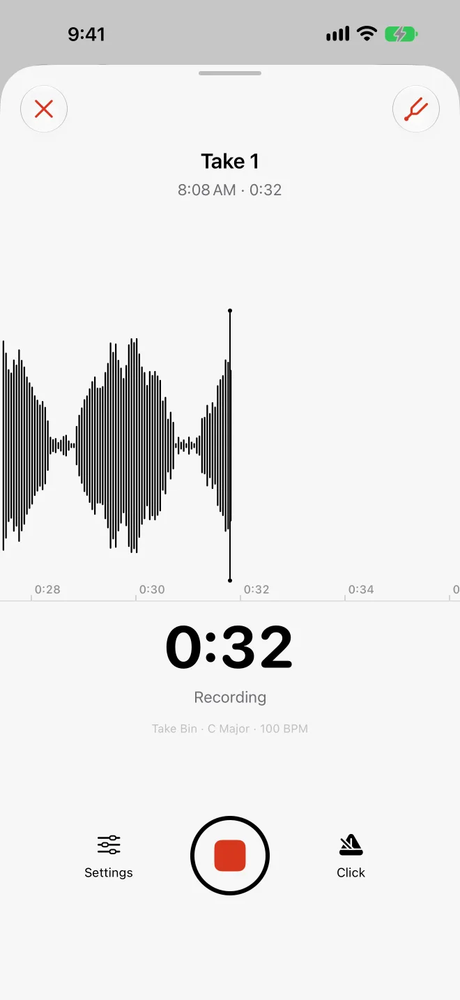
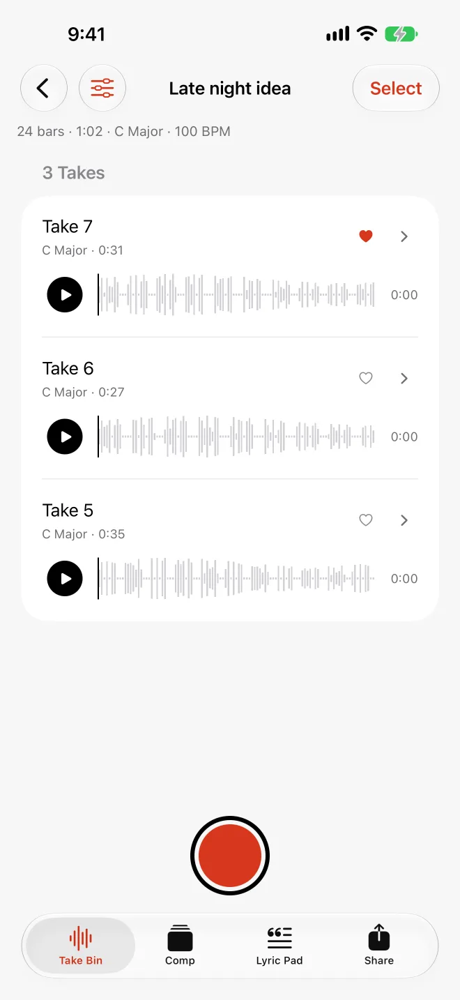
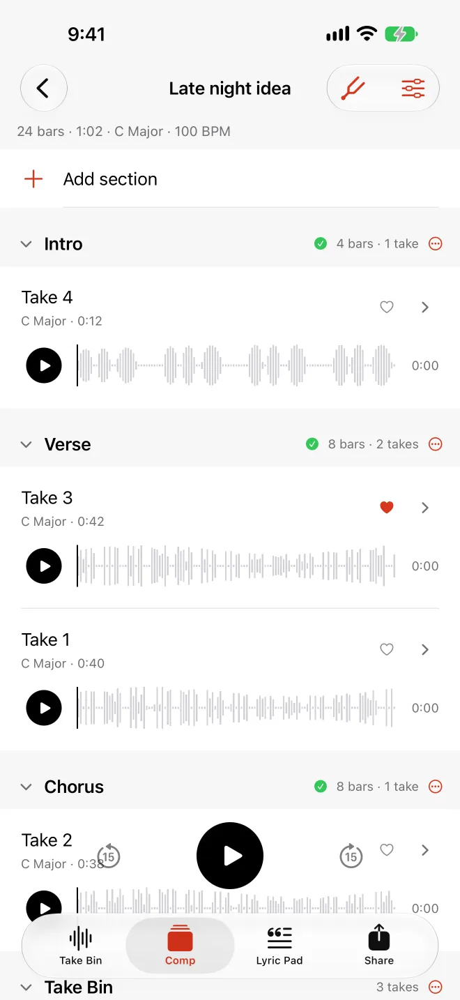
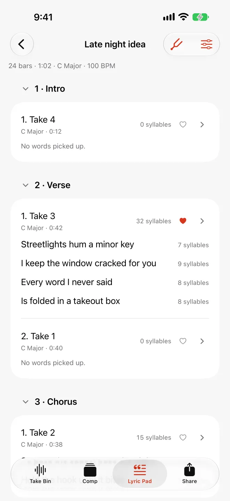

Beta guide
Saucebox is a sketchpad for songs. You record ideas as takes, keep the good ones, arrange them into sections, and send the result to whoever is producing the track. This page shows you how, and what we'd like you to try.
Your first five minutes
- Allow the microphone when iOS asks. Saucebox can't record without it.
- If a card asks you to choose Standard mic, do it. Voice Isolation is designed for phone calls. It cuts the quiet parts out of singing. Tap Choose Standard Mic, pick Standard, then Continue.
- Tap the round red record button on the Recent screen. Sing or hum anything for 10 seconds.
- Tap stop and keep it (Send to Take Bin). That creates a new song with your take in it.
- Record two or three more takes in the same song using the Record button on the Take Bin tab.
- Open the Comp tab, tap Add section (a Verse, say), then drag a take from the Take Bin into it.
- Press play on the Comp tab. You'll hear your sections in order. That's the core loop.
How the app is laid out

1. RecentYour songs. The red button records a new idea. 
2. RecordingSing, then stop and keep the take. 
3. Take BinNew takes wait here. Hold one for more options. 
4. CompSections in order. Drag takes in, then play the whole song. 
5. Lyric PadThe words it heard, with syllables per line.

- Recent
- Your songs list. The red button records a new idea straight away. + makes an empty song. Swipe a song for Favourite, Lock and Delete. Hold it to edit its settings.
- Inside a song: four tabs along the bottom
-
- Take Bin lists every take that isn't in the arrangement yet. Play, rename, trim, re-record.
- Comp is the arrangement. Add sections, drag takes into them, reorder, and play the whole thing.
- Lyric Pad shows the words for each take, grouped by section. Saucebox writes down what it hears, and you can edit it.
- Share lets you add tags and session notes, then send the song (audio plus arrangement) as one package.
- Top of a song
- Song settings (key, tempo, guide track), and the Tuner.
- The record screen
- Count-in and click follow the song's tempo. Retake throws an attempt away and starts again. ✕ cancels. An orange pill means Voice Isolation is on; tap it to switch.
What we'd like you to test
Try these in any order. Each one should take a couple of minutes. If anything confuses you, that counts as a finding, so please tell us.
1. Catch an idea fast
From the Recent screen, how quickly can you get a hook recorded and saved? Anything that slows you down counts.
2. Build a rough song
Make a song with at least two sections (Verse, Chorus) and two takes in each. Reorder them. Play the Comp from the top.
3. Fix a bad take
Hold a take's name and choose Re-record. Sing it again and tap Replace. The new take should stay in the same place. Then open a take's trim page and drag the handles to shorten what plays.
4. Swap a take in the arrangement
In the Comp tab, hold a Take Bin take and choose Put in arrangement… to replace one that's already in a section. Try Undo.
5. Words and pitch
Check the Lyric Pad. Did it catch your words? Open the Tuner and sing a note.
6. Send it
On the Share tab, add a note and tap Share song. Send it to yourself and check what arrives.
Hidden controls
- Hold a take's name for Rename, Re-record, Put in arrangement, Return to Take Bin and Delete.
- Swipe a song on the Recent screen for Favourite, Lock and Delete.
- Lock protects a song or take from edits. Locked items are greyed out and their menus hide editing actions.
- The ⋯ next to a section name moves it, renames it, or adds and removes bars.
- In the Tuner, hold the pitch to hear the reference note.
Known issues
- If you turned the microphone off for Saucebox, the record button won't tell you why yet. Turn it back on in Settings › Saucebox.
- A take whose audio file is missing doesn't show a clear "missing" state yet.
- Your songs live only on this iPhone. There's no iCloud sync or backup yet, so don't keep anything here you can't lose.
Sending feedback
Quickest: take a screenshot in Saucebox, then tap Share Beta Feedback. Say what you were trying to do and what happened.
If it crashes: TestFlight will offer to send a report. Please send it, and say what you tapped just before the crash.